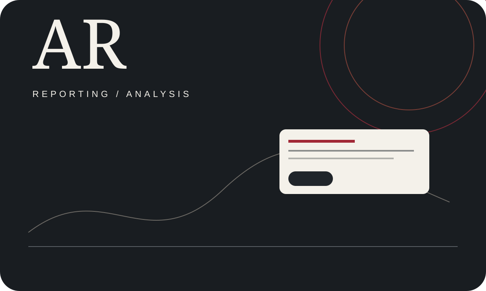

JOURNALIST · DHAKA
Arafat
Rahaman
Reporting on institutions, policy, power and the people living with their consequences.
—This week
—This month
—Verified archive

PINNED
Archive →LATEST ARTICLES
Newest first.
BY TOPIC
Follow a reporting thread.
Topics stay separate from article type, so readers get useful browsing without a clutter of categories.
JOURNALIST’S DESK
More than an archive.
Read notable work, see recent output, explore reporting themes, view a printable CV or get in touch.